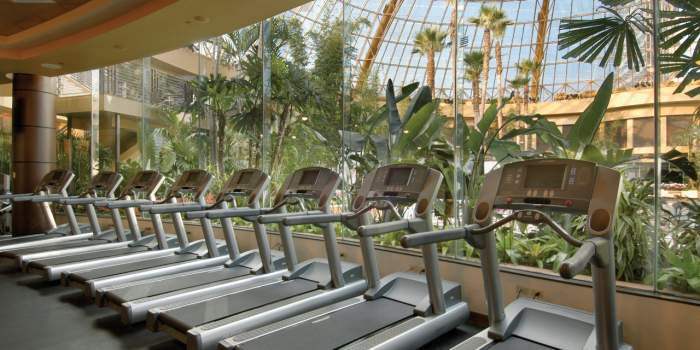

Paradise Garden Spa
Paradise Garden Day Spa combines a tranquil and picturesque environment, with a highly trained, friendly staff and superb services to ensure you have a memorable and enjoyable spa experience.
Paradise Garden offers an array of spa treatments for the utmost in relaxation
and rejuvenation as well as a variety of full-body and point-relaxation massage treatments,
skincare, hydrotherapy and other spa services.
Enjoy one of our relaxing massages or spend the day relaxing in one of our two outdoor
hot tubs in a luxurious garden setting.
Paradise Garden Golf Course
Live your dream and golf every day. As a Paradise Club owner, you enjoy access to preferred tee times at the gorgeous Paradise Mountain Resort, boasting views of the Rocky Mountains from 14 of its 18 holes. With 6,788 yards, this par-72 course was designed by Jason Johnson to provide endless challenge and inspiration.
Paradise Mountain facilities include a driving range and putting green, along with a dramatic clubhouse, which houses a pro shop, elegant locker rooms and the mountain-view restaurant Grilled. Golf instruction and club rentals are also available.
Paradise Fitness Centre

Keep up your exercise routine on your vacation at the Paradise Mountain Resort's spacious, state-of-the-art Fitness Centre. Work out with a range of cardio- and resistance-training machines, as well as inspiring fitness classes. Personal trainers are on hand for guidance and motivation. Afterwards, relax in the steam rooms and hot and cold plunge pools, and enjoy the luxurious locker rooms.
Say "I Do" in Paradise...
With several different wedding and reception venues, intimate and grand, it’s a breeze to imagine your dream wedding coming to life at Paradise Mountain Resort. Envision just the two of you exchanging vows on a secluded valley with The Rockies in the background or with dozens of friends and family gazing on as you celebrate your new life together in a lush hilly setting. Whatever your vision, the team at Paradise Mountain will turn your wedding dream into a reality.
Appointments and Inquiries
To schedule an appointment phone:
1.970.555.7372 or dial EXT 7372 from your room
Send inquiries regarding rates and reservations to:
Paradise Mountain Family Resort
PO Box 17603
Estes Park, CO 80517
Phone: 1.970.555.7777